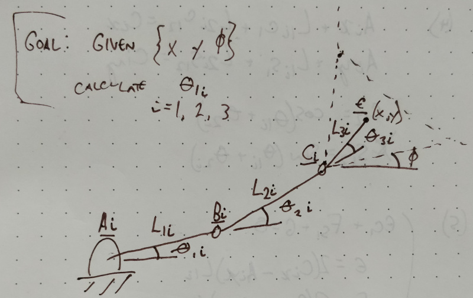
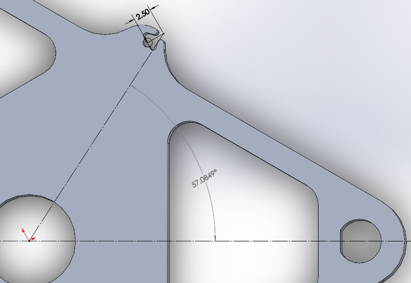
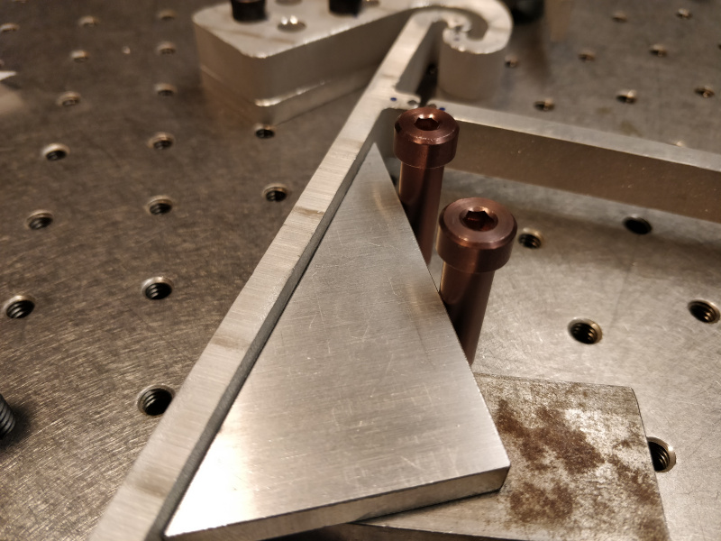
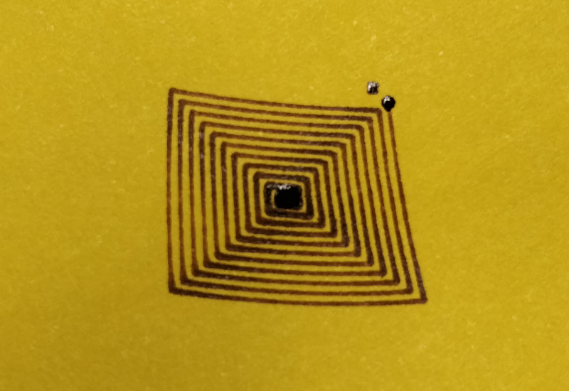
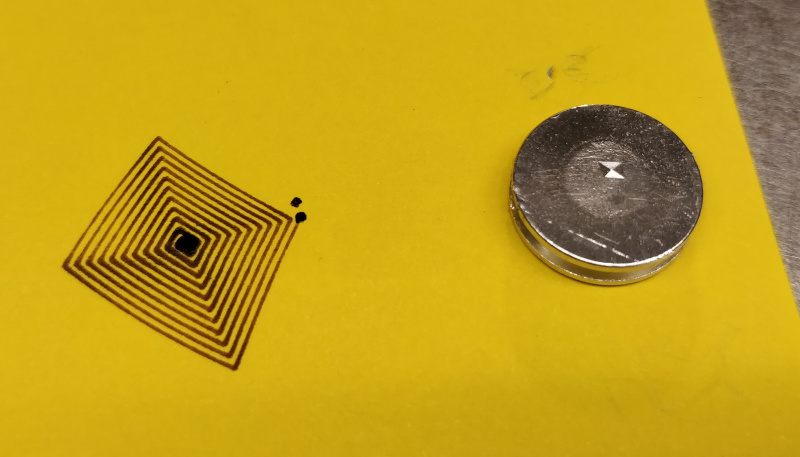
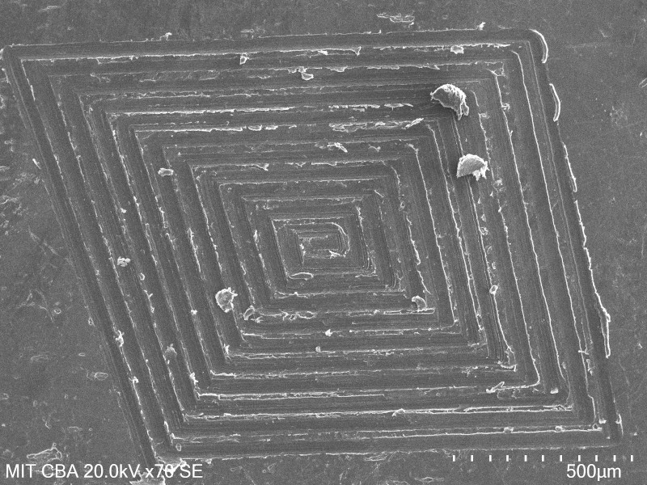
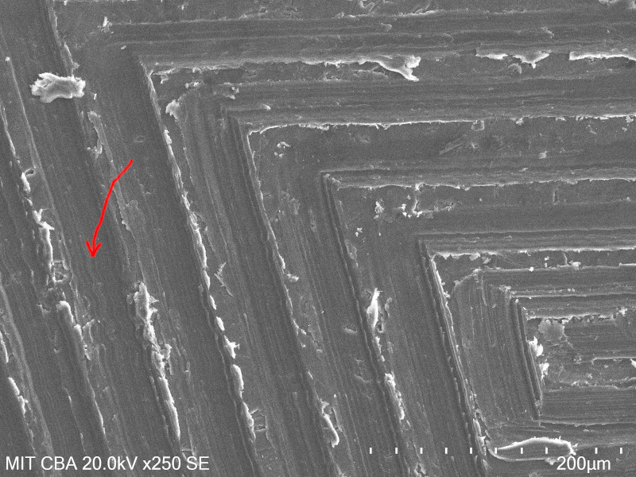
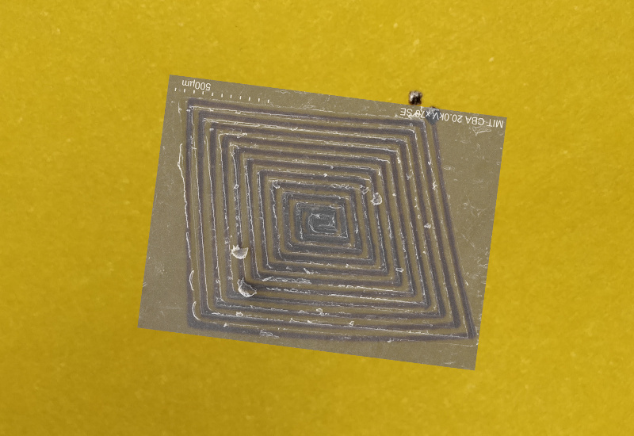

Inverse Kinematics
Given a desired stage orientation (X, Y, rotation), where should we tell the stepper motors to go? Ah, the inverse kinematics of parallel manipulators. This is outside my comfort zone so I spent some time reviewing relevant literature; in particular, The Optimum Kinematic Design of a Planar Three-Degree-of-Freedom Parallel Manipulator (C. Gosselin and J. Angeles, ASME, 1988) and Inverse Kinematics for Planar Parallel Manipulators (Robert L. Williams II and Brett H. Shelley, ASME, 1997) were both helpful starting points. For this work, I'm leaning heavily on the latter, so I'll use their naming conventions throughout.
redrawn from Robert L. Williams II and Brett H. Shelley (link above)
Implementation
I wrote a Python script (in Jupyter Notebook) to perform the IK transform on a pandas dataframe with a series of (x,y) points given a desired rotation value. I pulled nominal constants from the Solidworks model. In some cases these were nice round numbers; for example, the first and second link are 40 and 100 mm long, respectively. In other cases, like the angles psi1, psi2, and psi3 that relate the nominal stage centroid (which serves as the origin reference frame) to the end of the third link, the values were a bit messier since I did the CAD and kinematics in reverse order:
Wow yikes. But that is okay because we have computers. Here are all the relevant nominal constants:
| parameter | value | description |
|---|---|---|
| angle_max | np.radians(15) | maximum allowable joint angle (converted to radians using numpy) |
| length_L1 | 40 mm | first link length (between nominal flexure rotation centers) |
| length_L2 | 100 mm | second link length (between nominal flexure rotation centers) |
| length_L3 | 33.6953 mm | distance from stage connection pivot to origin |
| location_A1_x | 124.9124 mm | x distance from actuator 1 pivot nominal flexure center origin |
| location_A1_y | 43.6453 mm | y distance from actuator 1 pivot nominal flexure center origin |
| location_A2_x | -24.6582 mm | x distance from actuator 2 pivot nominal flexure center origin |
| location_A2_y | -130.0003 mm | y distance from actuator 2 pivot nominal flexure center origin |
| location_A3_x | -100.2545 mm | x distance from actuator 3 pivot nominal flexure center origin |
| location_A3_y | 86.3546 mm | y distance from actuator 3 pivot nominal flexure center origin |
| angle_psi_1 | np.radians(57.0849) | angle between line from origin to actuator 1 pivot and X |
| angle_psi_2 | np.radians(297.0849) | angle between line from origin to actuator 2 pivot and X |
| angle_psi_3 | np.radians(177.0849) | angle between line from origin to actuator 2 pivot and X |
| angle_theta1_1 | np.radians(120) | angle between actuator 1 link and X |
| angle_theta1_2 | np.radians(0) | angle between actuator 2 link and X |
| angle_theta1_3 | np.radians(240) | angle between actuator 3 link and X |
These values are used to first calculate the expected stage pivot locations and link angles (C1, C2, C3) for a given (x, y, phi) input where phi is rotation angle (and is kept at 0 for this exercise). Then, equations 5 and 6 from Williams and Shelley are used to solve for actuator angles using the tangent half-angle substitution method (described by Mabie and Reinholtz in Mechanisms and Dynamics of Machinery, 1987). These values get compared to the nominal actuator angles and the maximum allowable joint angle; based on this comparison, the "reasonable" value is selected (since the solution presents both an "elbow-up" and an "elbow-down" option) and added to the pandas dataframe. Finally, the calculated angles are multiplied by clank_scaling, a quick sizing adjustment coefficient, added to the dataframe, and outputted as GCode for the machine.
Testing
I added a series of (x,y) pairs to the dataframe that result in a square spiral starting at the origin. Before running the machine, I waterjetted a quick 30:60:90 triangle and used the fanciest 1/4-20 shoulder bolts I could scrounge from our parts bin to align the three umbrella links to the optical table:
Next, I cobbled together a pen holder with optical table parts and scaled the program to roughly the working area of the machine given conservative +/- 15 degree flexure limits. I hung a beefy bearing from the spring-loaded vertical pen axis to weight it down to the page a bit and ran the program; as before, the machine still thinks it's a Clank so the acceleration values are quite slow:
This resulted in a ~15 mm square spiral that is ... well ... _relatively_ square, but clearly not perfect:

A bit of the distortion may be from the camera angle, but the points certainly don't line up to the intended coordinates. But generally this is a good result; the lines don't cross and it's clear that the IK algorithm is mostly right. I decided to see how the distortion scales, so I re-equipped the sharpened bolt and drilled a hole in the stage to accomodate an aluminum SEM sample holder (which I carefully press-fit without getting touching to avoid contamination):
The results were impressive; here is an image without magnification next to the pen test:

An SEM micrograph reveals similar distortion to the larger test, but shows remarkable spacing consistency and tight corners. Groove spacing is around 70 um:

A closer micrograph shows the surface finish inside each trench, suggesting I've reached the limits of sharpened bolts. It might be time to make some better tools. Also note the area highlighted by the red arrow, which shows a bit of periodic wobble; my guess is this is showing the limit of stepper resolution:

Amplitude of the wobble is less than 2 um, so even if it can't be fixed with closed-looping the steppers or increasing their resolution it should be fine for my needs.
Rotating, scaling, transparent-icizing, and overlaying the SEM image shows that the distortion is quite similar, albeit not identical, at both scales:

In particular, the left side is off a bit, but this is close enough that the offset could be due to parallax errors from the light photograph (which I took with my phone without paying much attention to orthogonality). In any case, there is clearly an interesting problem to solve here. Getting the inverse kinematics good enough to produce distorted square spirals is an important step; it would be swell if I don't need to spend time measuring inaccuracies of the nominal dimensions and correcting constants. Without more data it is difficult to say how much of the distortion is caused by simple alignment errors; the three flexure anchors are bolted to the optical table through generous clearance holes, for example, so those values could be off by a millimeter or more. Alternatively, some (or most) of the error could be due to flexure geometry that is not optimized to maintain center of rotation. Based on a brief review of somewhat recent literature, there are numerical and functional approaches that could improve this problem, but most of the papers I found don't focus on relatively extreme superelastic displacements.
A much better solution is to quantify the error and produce a corrective transformation function I can apply along with the inverse kinematics algorithm. I initially thought about using a drawn or engraved test as the reference, but Chris suggested doing the whole measurement optically using a target and a telecentric lens. I might try the cheaper option first; a Raspberry Pi camera with a decent (but not telecentric) lens might get me close enough. Maybe then I'll be able to scan a trustworthy Cartesian grid and (finally) check for stage flatness.